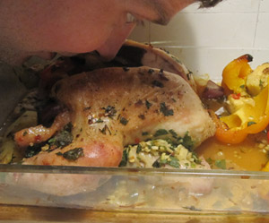

Brathähnchen mit süsssaurer Sauce
5 von 6Backofen auf 190 Grad vorheizen. Hähnchen waschen und trocken tupfen, innen und außen würzen. Mit Petersilien-Ingwer-Mischung füllen.
Paprika und Zwiebeln vierteln und in eine Kasserolle legen (z.B. in den Römertopf, dann diesen aber vorher entsprechend wässern). Chilis, Ananas und Fenchelsamen zufügen. Drei kräftige Spritzer Olivenöl (ca. 3 EL) darüber träufeln, salzen und pfeffern. Gut mischen.
Hähnchen darauf legen, mit etwas Öl bestreichen. In der Mitte des vorgeheizten Backofens ca. 90 Minuten braten. Das Hähnchen ist gar, wenn sich die Knochen leicht aus den Keulen lösen lassen.
Nach dem Braten den Bratensaft des Hähnchens über der Kasserolle abtropfen lassen. Hähnchen und die Hälfte des Gemüses und der Ananas herausnehmen. Auf einen Teller legen und 5 Minuten ruhen lassen, während Sie die Soße zubereiten. Dafür restliches Gemüse und Ananas mit Zucker, Essig und etwas Salz im Mixer pürieren. Je nach Dicke der Soße noch etwas heißes Wasser zugießen. Abschmecken.
Hähnchen und Ananas-Gemüse mit der Soße servieren.
Dazu passen gebratene Nudeln oder Reis.
